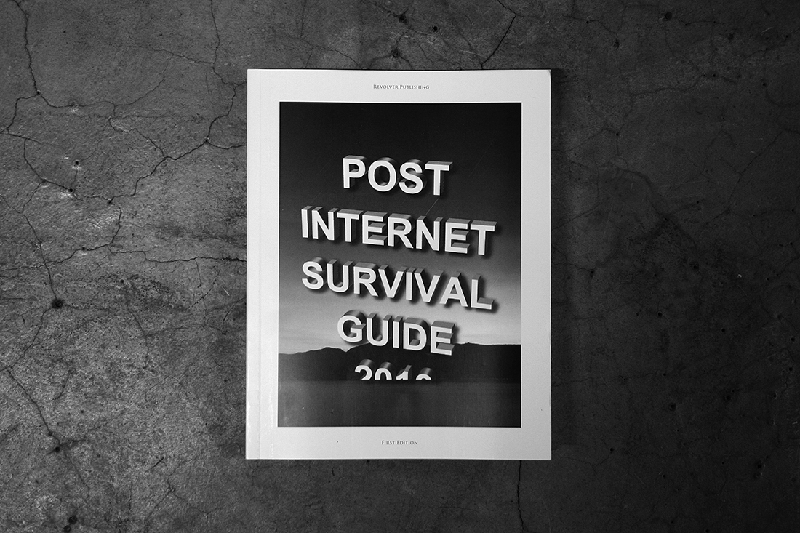
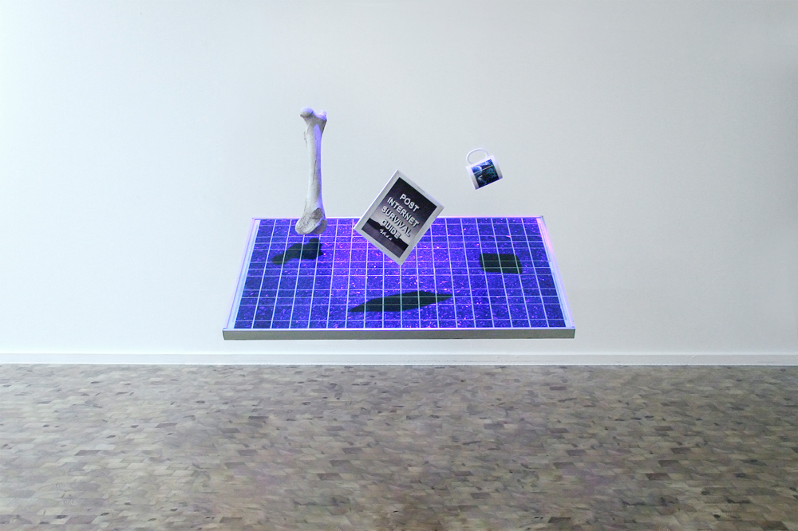
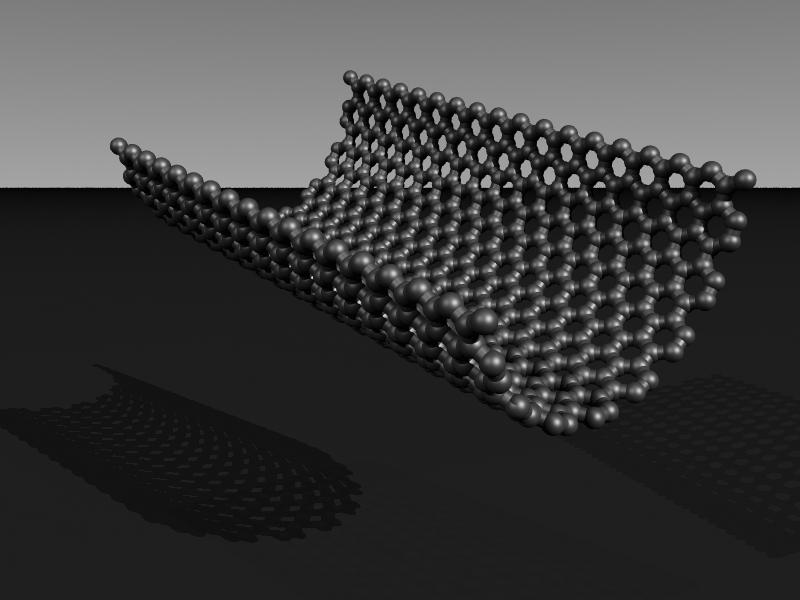
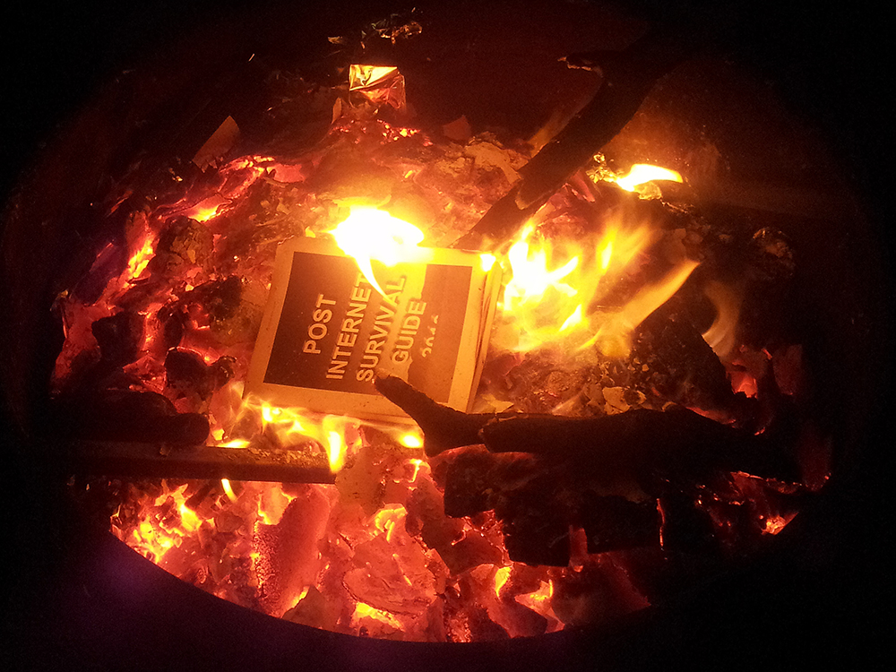

Coping with increasing complexity
Post Internet Survival Guide (2010) by Katja Novitskova
You are holding a guide to the ecology of a severe ongoing merging of matter, social and (visual) information in the present world. The shift to a multi-polar, mobile, post-democratic, gated, real-time set of conditions effectively redistributes the global balance of powers. The existing structures of our (Western) mode of thinking and being, including the flows of energy and value, the domain of aesthetics, the currency of art, and our role in the process that is civilization are being reshaped and re-articulated. The scale of these changes are reflected in the dynamics of formats—files, gadgets, species, identities, ideologies, brands, styles, cultures, natural disasters, memes, technologies—entering the ultimate platform and player of dissemination: Internet.


Post Internet Survival Guide (2010), by Katja Novitskova, a guide to the ecology of a severe ongoing merging of matter, social and (visual) information in the present world.
Following the art and information created and shared online during the year 2010, this Post Internet Survival Guide chronicles the perpetual battle for survival of these most essential formats. The collective practice of Internet-aware blogging and art has been evolving a new language to imagine, anticipate and engage with the descending reality and its horizons. In this world—that is being tagged as post internet—the Internet is an invisible given, like roads or trees, and is used to navigate not just information but also matter and space. The notion of a survival guide arises as an answer to a basic human need to cope with increasing complexity. In the face of death, personal attachment and confusion, one has to feel, interpret and index this ocean of signs in order to survive.
Throughout the year 2010 the blog survivaltips.tumblr.com has been tracking and contributing to the ‘post internet survival’ theme. Following more than a hundred interconnected blogs and sources, it harnessed the network and exchanged the findings from its own online presence. This emerging distributed archive has been edited into this book. The words, artifacts, tactics, surfaces and experiences you will find here, created mostly in relation to the tribal context of the web and the geo-economic frontiers of the world it is rooted in, induce various modes of translation between the reality of always, today and tomorrow—a survival kit for ideologies, an art catalogue, a future leak.

Post Internet Survival Guide (2010), by Katja Novitskova, inducing various modes of translation of reality.
Post Internet Survival Guide 2010 is organized into chapters according to the first page of Google search results for ‘survival guide’: SIZE UP THE SITUATION, USE ALL YOUR SENSES, REMEMBER WHERE YOU ARE, VALUE LIVING, IMPROVISE, VANQUISH FEAR AND PANIC, ACT LIKE THE NATIVES, LEARN BASIC SKILLS. It crosses streams of seemingly unrelated information flows—from art and news, to corporate stock photography, screenshots and scientific renderings. Post Internet Survival Guide elevates selected content from its original fragmented online environment and solidifies its temporary values and meanings in a collection of guiding narratives.

Post Internet Survival Guide (2010), by Katja Novitskova. This book is a tool to assist in stepping above our daily online routine. This is the space where we ask ourselves what it means to be a human being today.
This book is a tool to assist in stepping above our daily online routine, to reach a realm that lies somewhere between reading a principal religious text, watching a colonial documentary on savages, or looking at yourself in the mirror. This is the space where we ask ourselves what it means to be a human being today.
Katja Novitskova (2010), foreword for the project Post Internet Survival Guide